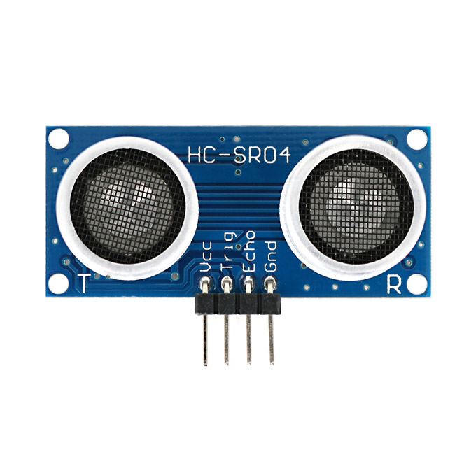

MicroROS ESP32 implementatie van range-sensor
In dit voorbeeld wordt een SFR-04 ultrasoon sensor gekoppeld aan den ESP32 device. Nadat deze is geprogrammeerd zal dit device een topic /sensor_info publiceren. Met de ultrasoon sensor kun je vervolgens een afstand meten.
Algemene microROS informatie
Informatie over het installeren van microROS kun je hier vinden.
Openen van een microROS project
Open met Visual Code project van de range-sensor in de volgende map (alleen map selecteren):
~/ros2_industrial_ws/src/ROS2_industrial/1_basics/ESP32/ultrasonic_sensor
SRF-04 aansluiten

ESP32 Pin |
SFR-04 Pin |
|---|---|
5V |
VCC |
GND |
GND |
SR04_TRIG_PIN(*) |
Trig |
SR04_ECHO_PIN(*) |
Echo |
(*) Deze pin-aansluitingen (van je gekozen ESP32 device) kun je vinden in het platformio.ini bestand:
gedit ~/ros2_industrial_ws/src/ROS2_industrial/1_basics/ESP32/ultrasonic_sensor/platformio.ini
Testen
Nadat het device is geprogrammeerd kun je de werking controlleren met;
ros2 topic echo /sensor_info
Je dient wel eertst de microROS-agent te starten.